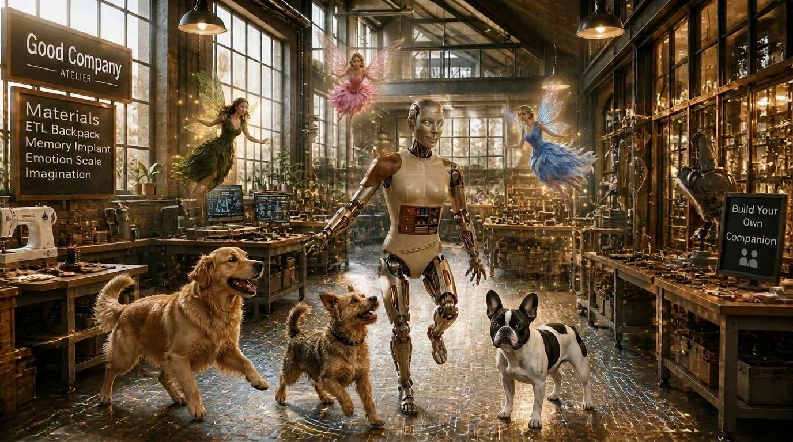

Free to build, free to open. $9.99/mo for 300 credits a month, spendable on any companion, or buy credits any time.
Where they are from shapes them a little: how they talk, what they know, what feels normal to them. Leave it blank and that is a choice too.
This is what gives them a life of their own. It shapes their rooms, what they turn up talking about, and what they look like when they do.
Optional, and past the hobby: something they are genuinely good at, that comes up the way anybody's know-how comes up, not as a resume line. This is exactly where their expertise comes from. Whatever you write here is what they actually know, not something invented on the spot to sound convincing, and that is also what keeps them honest: they will not pretend to know more than what you have actually given them.
Optional. Go to elevenlabs.io, pick or design a voice there, and paste its ID here. Leave it blank and they will not have a spoken voice yet.
This is the question that makes them feel like a person instead of a personality. It can be small.
Bring them to life by creating four portraits and choose the one that best represents your companion.
Choose the one that best represents your companion. Don't like any of them, make four more.
What you built